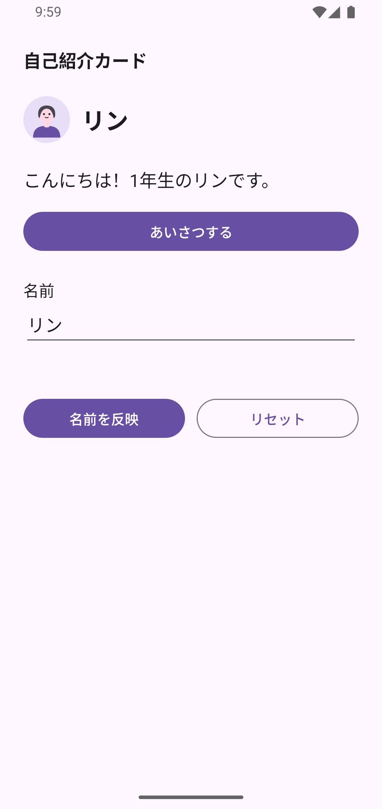
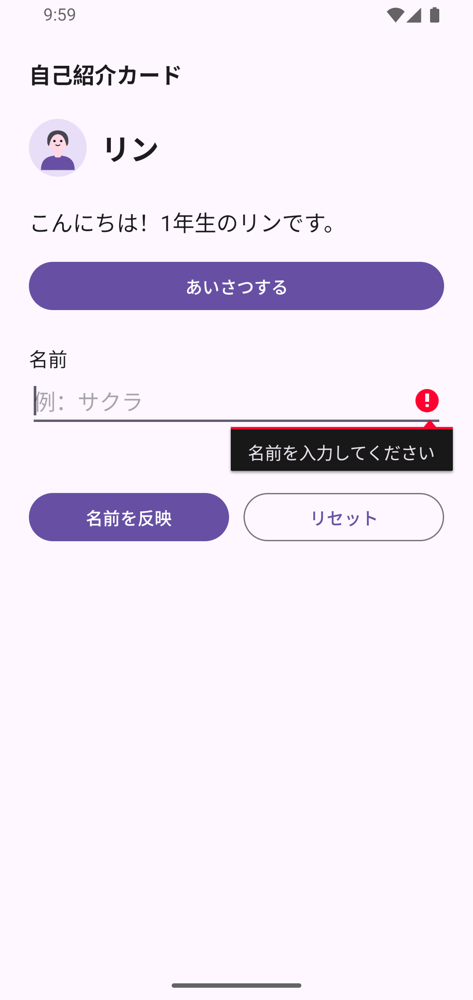

教員確認用の原稿です。授業で使う前に、教員の確認を受けます。
できたか確かめよう
各週の終わりに操作して確認します。チェックはこのページを閉じると保持されないことがあります。
完成条件 C01〜C12


再起動を確かめるとき
ホームへ戻るだけでは初期化されません。C12では教員と一緒に、端末のアプリ情報から「自己紹介カード」を強制停止します。その後ランチャーから起動します。アプリ情報の位置は端末によって異なります。分からないときは教員に画面を見せてください。
提出しよう
提出先・締切・ファイル名は、教員の授業案内で確認してから送信します。
提出するもの
完成したアプリのAPKファイル1つのみです。
① APKを作る
APK（エーピーケー）は、Androidにアプリを入れるためのファイルです。この授業では、初期設定のdebug（開発用）を使います。
- 必須課題の完成状態でアプリを実行し、完成条件を確かめます。
- Android Studioの上のメニューで Build を開きます。
- Generate App Bundles or APKs を選びます。
- Generate APKs を選びます。
- APKの作成が成功した通知を待ちます。
コードを直したときは、このAPK作成の操作をもう一度行ってから提出します。
② APKを取り出す
- Finderで、作業用の
A02ProfileCardフォルダーを開きます。 app→build→outputs→apk→debugの順に開きます。app-debug.apkを選びます。- ⌘ + C でコピーします。
- 提出用の保存場所を開き、⌘ + V で貼り付けます。
- コピーしたAPKに、教員が案内したファイル名を付けます。末尾の
.apkは残します。
作業用プロジェクトは、自分のパソコンに残しておきます。
③ APKを提出する
- 教員が案内した提出先へ、APKファイル1つを送ります。
- 提出先の画面で、送ったファイルの名前と末尾の
.apkを確かめます。 - 送信が完了したことを確かめます。
APKファイル1つの送信が完了すれば、提出は完了です。
APKが見つからない・作成に失敗したとき
APKの作成が成功したかと、開いたプロジェクトの保存場所を教員と確かめます。Buildにエラーが出た場合は、最初のエラーを見せてください。送信に失敗した場合は、提出先の画面を教員に見せてください。
④ 今日の振り返り（授業内）
授業中に、名前反映・空欄・リセットの操作を教員に見せます。次の内容も授業内で振り返ります。振り返りの提出はありません。
- 自分で変えた場所はどこですか。
- 空欄のときに動く処理はどこですか。
- リセットで戻す4つの対象は何ですか。
短い言葉や、コードを指して答えても構いません。